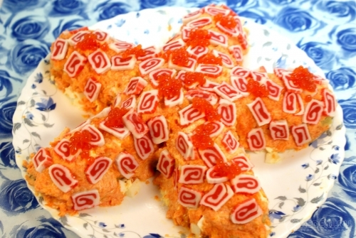

Главная страница
Салат звездочка

Описание
Салат Звёздочка станет украшением любого стола. Он настолько же красив и оригинален, насколько и вкусен. Маринованные огурчики, курочка, овощи, майонез. Ммм....
Ингредиенты
- Огурцы соленые 2 шт.
- Картофель 3 шт.
- Филе куриное 200 г
- Морковь 3 шт.
- Икра красная 50 г
- Яйца 2 шт.
- Майонез по вкусу
Приготовление
- Соленые огурцы нарезать вдоль и взять пять средних долек. Дольки огурцов выложить на плоскую большую тарелку в виде звездочки.
- Курицу отварить и мелко нарезать. Смешать в отдельной миске курицу с чесноком и майонезом.
- На огурцы укладывать объемным слоем курицу с майонезом и чесноком.
- Картофель отварить, остудить, нарезать кубиком и выложить третьим слоем на курицу, смазывая майонезом.
- Четвертым слоем выложить сваренные вкрутую и мелко нарезанные яйца.
- Морковь отварить, натереть на мелкой терке и смешать с майонезом.
- Морковно-майонезной смесью обмазать все части салата сверху и по бокам.
- Украсить красной икрой.
Приятного аппетита!